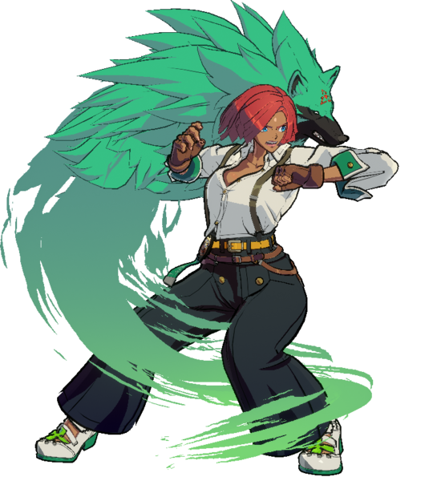
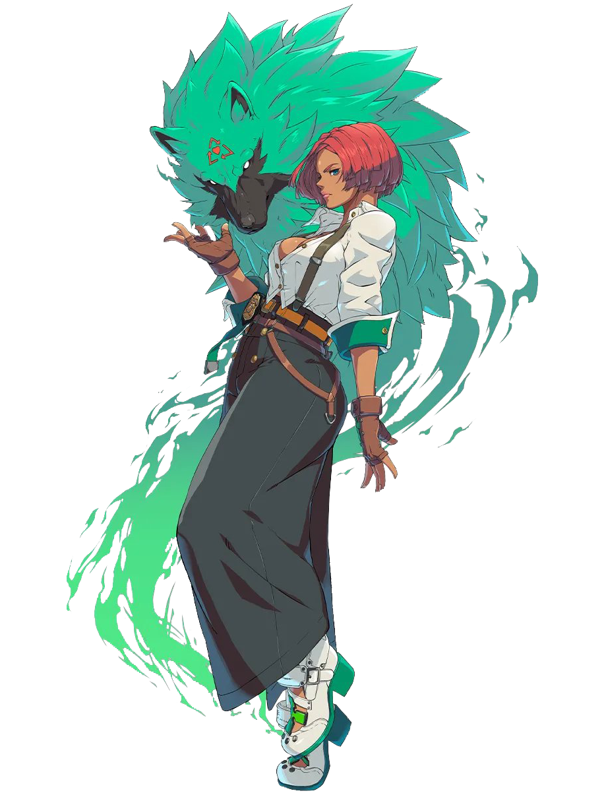
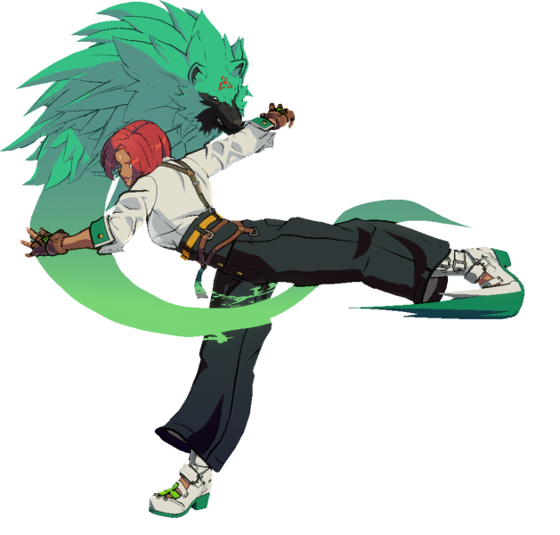
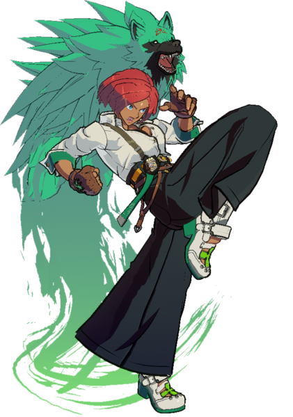
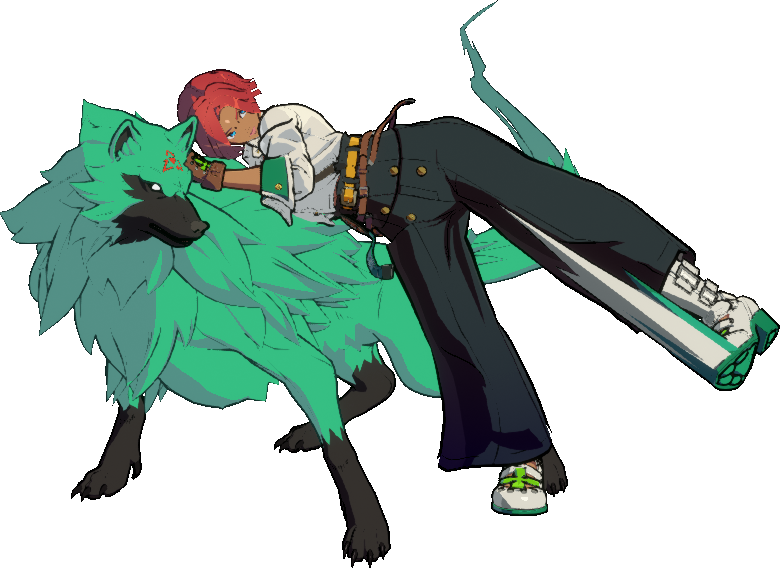
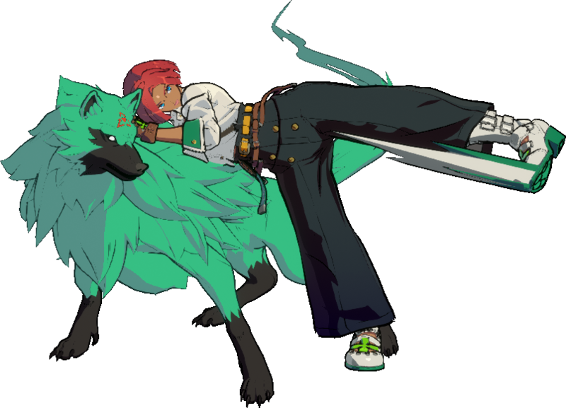
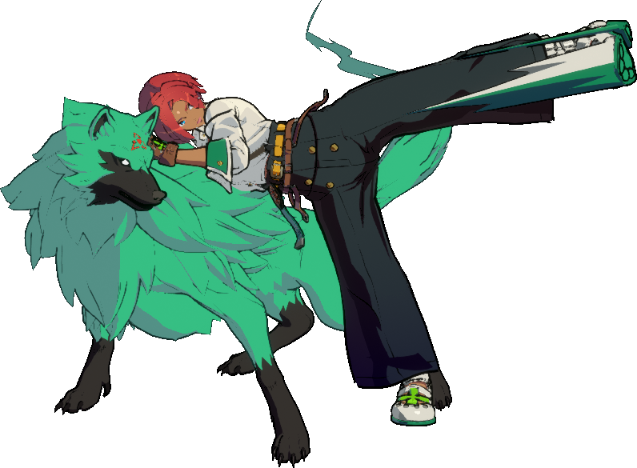
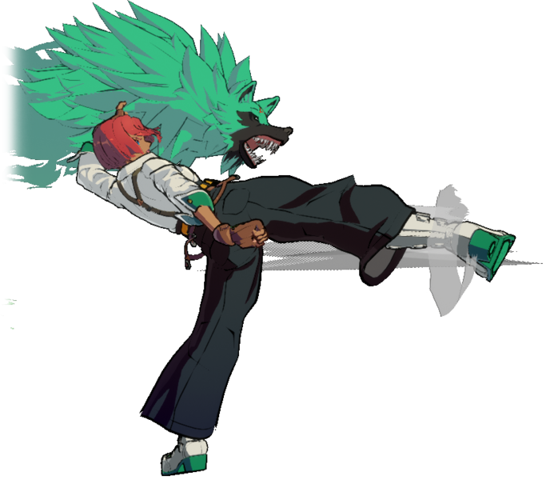
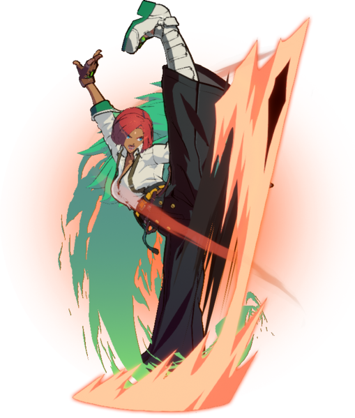

-

Overview
Overview
Move fast, strike fast, think fast! Giovanna is a rushdown character with outstanding speed and pressure, while also having a fair share of defensive capabilities. Her unique step dash preserves forward momentum if she acts during it, allowing her to advance and attack simultaneously; useful for closing the gap during an opening.
Giovanna’s attack speed is top-class. Her 5P is unusually fast, and 5K is quite quick for its range. Her c.S is a powerful, plus on block pressure tool, and the multi-hitting nature of f.S and 2S make them easy to hit-confirm from. Pressure can be ended with the risk-free Sepultura, or reset with the plus on block but challengeable Trovão. Sol Poente is a risky overhead that can cross-up at close range, while Trovão can pierce through projectiles after a moderate startup. Sepultura's generous reach allows it to counter attempts to outmaneuver or low profile her pressure.
Giovanna’s combination of speed, range, and evasion makes her defensive game solid despite her lack of a meterless reversal. Sol Nascente is a great anti-air that lacks the invulnerability of a traditional DP but compensates with evasive properties and high reward. Her 2D is a long, disjointed poke with great reward on counter hit. It’s good for space control, frame traps, and can be used as a meaty attack to outrange DPs or Reversal Overdrives.
Giovanna’s unique Meter Boost magnifies her damage output and defense value when she has enough Tension, allowing her to benefit from Tension without spending it. Her pressure and neutral are simple yet versatile, and her combo routes have a wide variety of accessibility and adaptability.
If you want an accessible character who is fast, aggressive, has strong counter hits and phenomenal fashion sense to boot, then Giovanna is for you.
Giovanna
|  |
| Damage Received Mod |
| ×1.03 |
| Guts Rating |
| 1 |
| Prejump |
| 4F |
| Backdash |
| 19F Duration |
| 1-5F Invuln |
| 1-13F Airborne |
| Unique Movement Options |
| Variable step-dash |
| Fastest Attack |
| 5P (4F) |
| Reversals |
| 632146H (9F) |
| Summary: Giovanna is a fast mid-range character with strong strike/throw offense. | |
| Pick if you like | Avoid if you dislike |
|
|
Unique Mechanic: Meter Boost
When Giovanna's tension gauge is filled above certain thresholds, she deals more damage, receives less damage, and her normals begin dealing chip damage.
- She gains an approximate +5% damage at half Tension, which is raised to approximately +10% damage at full Tension. The buff will apply even if a move consumes Tension, meaning Ventania and Tempestade deal more damage with each boost.
- Her defense ratingA multiplier for how much damage you take. Lower = Better improves from 1.03 to 0.97 at half Tension, and improves further to 0.93 at full Tension, similar to Potemkin's defense, the highest in the game.
- Every Normal attack begins dealing 12% chip at half Tension, which strengthens to 25% at full Tension, the standard chip damage for specials but on every single attack.
-
Rei glows from 50% to 99% Tension
-
Giovanna glows at 100% Tension
Normal Moves
5P
| Damage | Guard | Startup | Active | Recovery | On-Block | Invuln |
|---|---|---|---|---|---|---|
| 26 | All | 4 | 3 | 9 | -2 |
A remarkably swift elbow jab. Faster than 2P, but hits higher up. Often as useful as a quick anti-air button as it is an abare button to get out of pressure. Throw punishable if you dash into throw range with only one hit of it, but chaining two jabs will keep you safe.
- 4 frames of startup, so faster than average for a punch button
- The combo into 214K requires the opponent to be crouching, whereas 623S and 6P work on standing.
Gatling Options: 5P, 2P, 6P, 6H
5K
-

| Damage | Guard | Startup | Active | Recovery | On-Block | Invuln |
|---|---|---|---|---|---|---|
| 30 | All | 6 | 2 | 12 | -2 |
A fantastic poke with considerable range for its speed. With dash momentum it can extend almost 1/4th screen. In particular, it's great to combine with microdashes and dash stops, as you can space yourself out to avoid going into throw range. At Roundstart, microdash 5K is one of the bedst roundstarts in the game. Low recovery means that whiffing this button is very low risk in general, and you can even catch people off guard with a frame kill of sorts by whiffing it right outside of range and then hitting 5H to counter-hit anyone sluggishly trying to punish your whiff.
On block, Gio can frametrap with 6P, stagger pressure with c.S, beat 6P's with 2D or 214K, or jump cancel for burst baiting, in combos, or for BRC mix.
- Jump and dash cancelable. Unlike a regular dash, the dash cancel prevents all input until the animation is finished.
- Dash cancel is -11 on block.
- Juggle tool that links into itself.
- True to the animation, about half of Giovanna's hurtbox is shifted upward throughout the attack, allowing you to potentially avoid lows from afar.
Gatling Options: 6P, 6H, 5D, 2D
c.S
-

| Damage | Guard | Startup | Active | Recovery | On-Block | Invuln |
|---|---|---|---|---|---|---|
| 40 | All | 7 | 6 | 10 | +3 |
An invaluable knee strike that defines Giovanna's stagger and throw pressure. The +3 frame advantage allows you to chain this normal into itself with a small gap in between. letting you walk/dash up for a throw as you keep conditioning them to block, their only possible only non-reversal retaliation being a ~5 frame normal. Once they are conditioned to try and jump out of your throws, gatling into 2S to catch them trying to jump, throw tech, or mash. Gio must be very close to the opponent for c.S to come out, with the less-powerful f.S coming out if the opponent is too far away.
Proper use of dash momentum is key to maximizing effectiveness. Even when using it as okizeme, while as close to the opponent as possible, dashing before you press the button will reduce pushback, since Gio will keep some of the dash's movement. When trying to loop pressure, remember to dash after the move recovers - dashing during active frames will lock you into the dash cancel animation and leaving you ~-7.
The dash cancel on this button can lead to an immediate Blue Roman Cancel (BRC), which gives her an airtight high/low mixup on block with 5D or any of her lows. On hit both options lead to a conversion, and on block she remains plus enough to continue offense. The jump cancel can be done to do the same, mostly useful with an immediate drift forward BRC once you're in the air, as the hefty blockstun of c.S is retained and you have ample time to mix the opponent up. You can force them into a standing block with any jump normal, and you also get access to double overhead mixups by chaining j.H or j.K into j.D and then immediately going for a low upon landing.
- Causes a float state on hit, allowing you to start juggles off the ground by immediately going into 2H.
- Jump and dash cancelable. Unlike a regular dash, the dash cancel prevents all input until the animation is finished.
- Dash cancel is -4 on block.
- Whilst +3 on block and 7f startup, the closest gap you can have between this normal and itself is 5 frames wide due to the cancel window into f.S
Gatling Options: 6P, f.S, 2.S, 5H, 2H, 6H, 5D, 2D
f.S
-

| Damage | Guard | Startup | Active | Recovery | On-Block | Invuln |
|---|---|---|---|---|---|---|
| 10, 10, 16 | All | 9 | 2(6)2(6)2 | 16 | -4 |
Three consecutive kicks, good for catching backdash, low-to-the-ground airborne opponents and putting out alot of hitboxes in neutral.With momentum f.S will continue sliding as each hit comes out, making it good for approaching opponents. It has some weaknesses - it loses to 6P's and low profiles, and is very punishable on whiff. Along with 2S, it lets Giovanna easily hit confirm into a basic combo. On block, Gio can threaten a 5H frametrap.
- Hits 3 times, with each hit slightly increasing in vertical height.
- Can be low profiled.
- Long active duration.
Gatling Options: 5H, 2H
5H
-

| Damage | Guard | Startup | Active | Recovery | On-Block | Invuln |
|---|---|---|---|---|---|---|
| 45 | All | 10 | 3 | 19 | -5 |
A long kick that Giovanna has good gatlings into from S buttons, making it invaluable in pressure and frametraps. It's also Giovanna's longest ground poke, useful when you're forced to stay at a distance. While it may not be the fastest or most plus of her normals, this button opens up many options that she would otherwise struggle with, and is a core part of cementing her poke/punish/pressure playstyle as well as her grounded routes that she's too far to get a launcher out of.
- Combos into 236K and en623S on counter-hit for decent damage.
- Partially disjointed
- Wallbounces and groundbounces on air hit
5D
-

| Version | Damage | Guard | Startup | Active | Recovery | On-Block | Invuln |
|---|---|---|---|---|---|---|---|
| 5D | 45 | High | 20 | 4 | 25 | -15 | |
| 5[D] | 56 | High | 28 | 4 | 25 | -10 |
Uncharged Dust
Universal overhead attack that's pretty fast. Giovanna steps forward and does a split kick. It doesn't really look like an overhead, but it certainly hits like one. Given Giovanna's pressure, it shouldn't be too hard to crank the RISC gauge and cash out damage with 5D. Can be gatling from 5K, 2K, or c.S for a mixup.
- Uncharged dust on-hit is 0 or neutral frame advantage and causes float
- Causes 80% proration on-hit
Charged Dust
Similar to uncharged but is slow enough to be reacted to, but if it does land it gives a very high damaging combo. Gio's highest damage singular attack, use this if you want to break walls when you have enough time to charge it and you don't have meter.
- Charged dust leads to soft knockdown (+36).
- Holding up during the hitstop frames of charged dust will activate homing jump:
- Doing a homing jump will cause an area shift and put the opponent into a unique high damaging air combo state.
- Pressing any attack twice without jump/dash cancel will activate the homing jump finisher causing a hard knockdown (+23).
- Homing jump combos can sometimes increase meter balance enough to activate positive bonus.